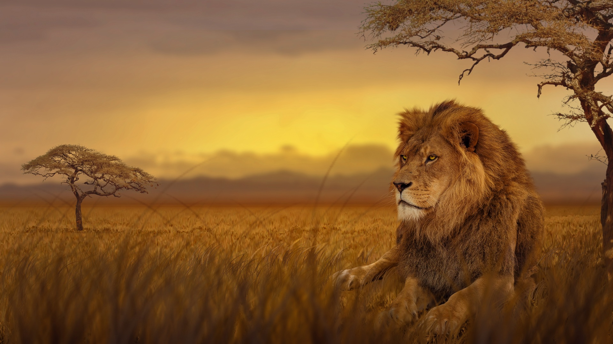

Even a hare, the weakest of animals, may insult a dead lion.

Lions Are the Second Largest Cat on Earth.
The lion is a large felid of the genus Panthera native to Africa and India. It has a muscular, deep-chested
body, short, rounded head, round ears, and a hairy tuft at the end of its tail. It is sexually dimorphic;
adult male lions are larger than females and have a prominent mane.
Typically, the lion inhabits grasslands and savannas, but is absent in dense forests. It is usually more diurnal than other wild cats, but when persecuted, it adapts to being active at night and at twilight. During the Neolithic period, the lion ranged throughout Africa, Southeast Europe, and Western and South Asia, but it has been reduced to fragmented populations in sub-Saharan Africa and one population in western India. It has been listed as Vulnerable on the IUCN Red List since 1996 because populations in African countries have declined by about 43% since the early 1990s. Lion populations are untenable outside designated protected areas. Although the cause of the decline is not fully understood, habitat loss and conflicts with humans are the greatest causes for concern.
1. What is special about Lion?
Lions are one of Africa's most recognizable animals and for good reason: more than any other animal in the
African wilderness, lions signify courage, strength, and power. Spending up to 20 hours of the day sleeping
or resting, lions are the laziest of the big cats.
Lions are the most sociable of all the big cats. They live in groups called prides, which usually consist of related females and their offspring. The typical pride consists of ten to fifteen lions, with several adult females, their cubs and up to four males. Some lion prides can be as large as 40 members!
2. Lions Don't Need to Drink Everyday, But They Need to Eat everyday!

Lions can go up to four days without drinking water, but if available, they will drink water every day. Lions need to eat every day. Adult female lions need to eat about 11 pounds of meat each day, while adult males eat 16 pounds or more every day. While lions primarily prey on large herbivores such as zebra, wildebeest, and buffalo, they have been known to prey on smaller animals like mice, birds, hares, lizards, and tortoise's.
3.Female Lions (Lionesses) Do Most of the Hunting

Lionesses are the primary hunters of the pride. They are smaller and more agile than males and they use teamwork to bring an animal down. After a successful hunt, all the lions in the pride share the meal. But there is a pecking order, with the adult males eating first, followed by the lionesses and finally the cubs. The males protect both the pride and the pride’s territory (which can extend up to 100 square miles) from competing prides and other predators. Anywhere from 85-90% of the hunting is done by the females in a given pride.
4.Lions Are Superb Hunters!
Lions hunt by ambush. Fanning out, they form a semicircle, with the smaller lionesses herding the prey towards the center. A lion’s vision is roughly six times more sensitive to light than humans, giving them a distinct advantage when hunting at night. Lion’s claws are retractable, reaching up to 1 ½ inches in length, allowing for the tremendous control when it needs to go in for a kill. Lions can also reach speeds of up to 50 miles per hour in short bursts and can jump up to 36 feet. So, it is easy to see why the lion is referred to as the “king of the jungle”, which leads us to our next fact...
5.Lions Do Not Live in Jungles!

Although lions are known as the "king of the jungle", lions in Africa do not actually live in a jungle. Instead, their primary habitats consist of Africa’s grasslands and plains. Three of the five largest lion populations are found in the wide-open savannas of Tanzania.
6.More Lion Cub Facts!
When they are born, cubs are very small, and their eyes are closed until they are two to three weeks old. Even then, they cannot see properly for another few weeks. This is when they are vulnerable to attack from large birds, snakes and even male lions. A lioness will keep her cubs hidden from other lions for around six weeks until they are old enough to follow the pride. Lion cubs are full of life and grow up playing with the other youngsters in the pride. They can be seen leaping, rolling, and gently biting. This type of play builds strength and family bonds.
7.Lions Can Climb Trees (If They Have To)!

Most lions spend all their time on the ground, but in some parks across Africa they have learned to climb trees. Compared to leopards, they are not very graceful at climbing trees as they are not adapted for climbing. Most prides of lions do not climb trees, and big males are less likely to climb a tree because they are so heavy. The reason why lions climb or sleep in trees is to get away from pesky biting flies and insects on the ground. It can be cooler up in a tree, and they have a higher vantage point to see if any other animals are nearby. Lions may also be forced to climb a tree temporarily to try to escape from an angered herd of buffaloes. These special tree-climbing lions are most popular in Tanzania and Uganda. Queen Elizabeth National Park, Lake Manyara National Park, Lake Nakuru National Park, and Tarangire National Park are the best places to possibly see them. With that said, some lucky visitors to the Serengeti have seen lions in trees too.
Comments